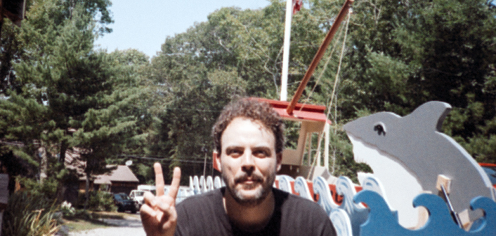

Tor Ekstrom
Project manager at Northeastern University. Master's student in computer science.
Restless in hobbies, drawn to the wide experiences of the world.

Path
I studied psychology at Gordon College, then spent three years in a cognitive science lab at McLean Hospital, where I also wrote the software for our experiments and published articles. From there I moved into clinical research at Brigham and Women's Hospital and Atrius Health, and eventually into project management. Today I'm a project manager at Northeastern University, where I'm also working toward a master's in computer science.
-
2008–2012
Gordon College B.A., Psychology
-
2013–2016
McLean Hospital Clinical Research Assistant
Helped run a small cognitive science lab, coded the programs its experiments ran on, and co-authored more than 13 peer-reviewed publications and presentations.
-
2016–2017
Brigham and Women's Hospital Clinical Research Coordinator
Coordinated up to 16 clinical research projects, from straightforward to highly intricate.
-
2017–2018
Atrius Health Clinical Research Coordinator
Coordinated an 80-plus-person team piloting an AI-enhanced electronic medical records tool across four clinical sites.
-
2018–2023
Atrius Health Project Manager, Quality & Implementation Research
Led a cross-functional team building a software and educational toolkit for pediatric care across more than 20 clinical sites, streamlined COVID-19 monitoring for a workforce of 7,000+, and steered two projects to federal grant applications of over $2 million each.
-
2023–now
Northeastern University Project Manager
Finding the best place for generative AI in higher education, while working toward a master's in computer science.
Practice
Professionally, I'm drawn to data, analytics, and visualization: using data as a lens to understand the world around me. I'm also into software development and video games, and I'm always looking for ways to carry the creativity from my hobbies into my professional life.
In practice that has meant a Spotfire dashboard informing clinic workforce planning, semi-automated workflows for cleaning and analyzing research data, and an effort-forecasting tool for department staffing, delivered alongside the Agile teams I've facilitated.
- Currently
- Project manager, Northeastern University
- Studying
- Master's in computer science
- Focus
- Finding the best place for generative AI in higher education
- Certified
- Project Management Professional (PMP), Certified ScrumMaster (CSM), Certified Scrum Product Owner (CSPO)
- Interests
- Data, analytics & visualization; software development; video games
Photography
Candids of the people I love, and the things I find interesting.
I mostly use photography to document what's going on in my life. I shoot film and develop my own photos. Color is where I spend most of my time, but I have a weakness for black and white, especially dark, romantic, grainy images.
Thanks, Mom. You can stop bugging me about putting my pictures on the internet now.
Pastimes
- Football
- Drums & guitar
- Film photography
- Video games
- Cooking
- Home brewing
- Small engine building & repair
- And many others